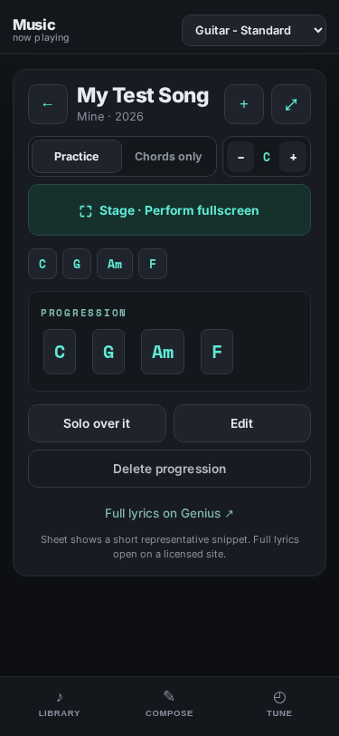
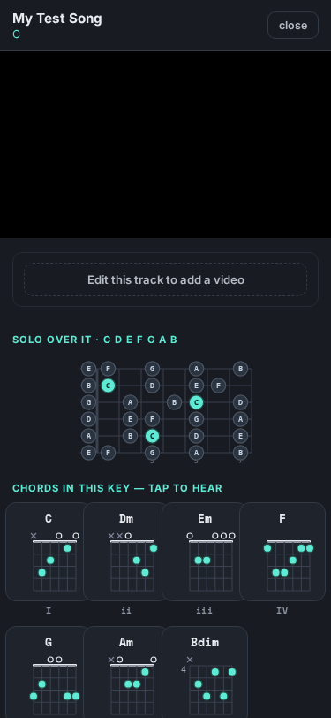
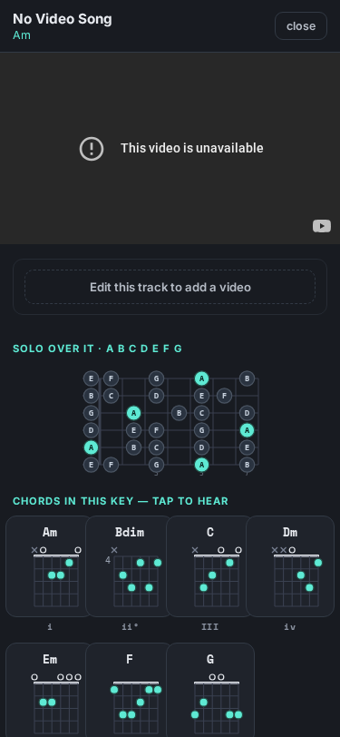
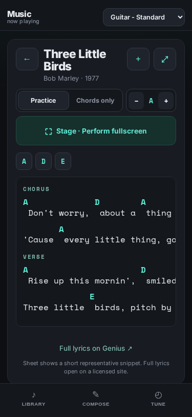
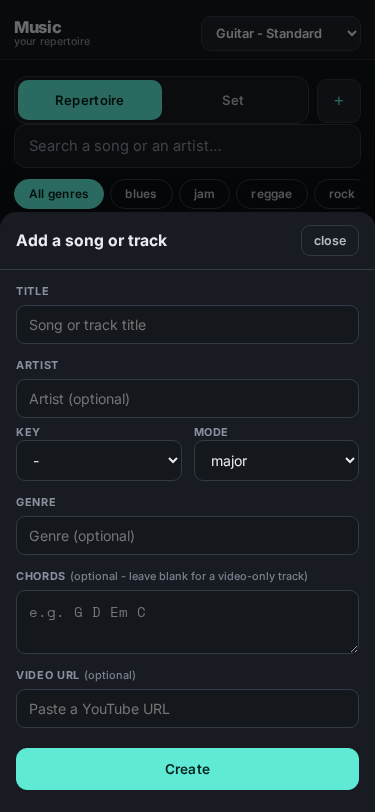
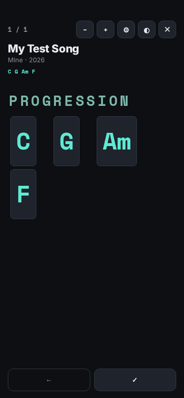
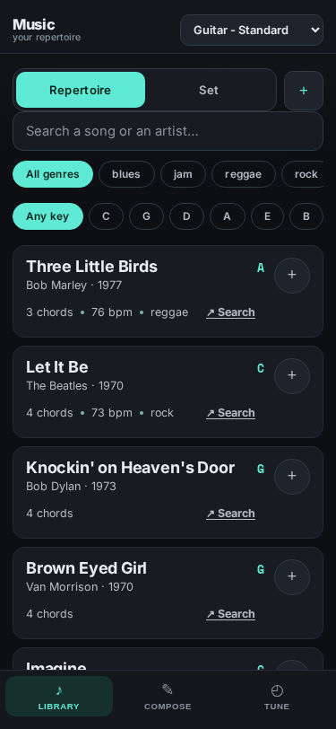
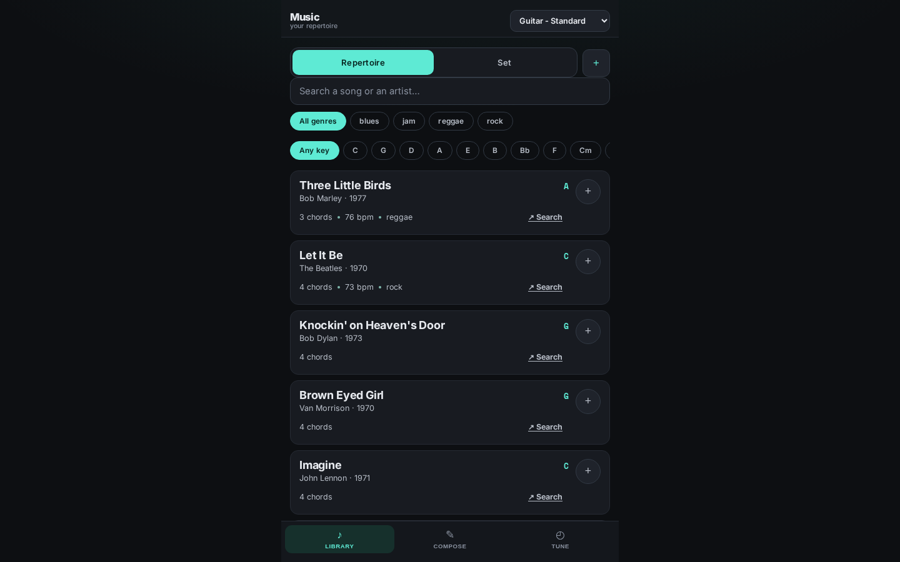

Final Reviewer Report - all 13 UAT items - 18/18 live checks 0 console errors - HITL merge decision pending
What this is
Your UAT feedback on PR #62 (M3 Repertoire merge), resolved via interview into an atomic plan, executed as a 4-task worktree swarm and integrated into one PR off main. Every item verified live in the real app at 375px + 1440px.
| Feedback | Change |
|---|---|
| Pasted YouTube URL never shows the curated video ("Watch on YouTube" persists) | Video lives on the saved song (cs.yt), keyed to a stable id. Fixed + proven live, persists across a full reload. |
| Do we need to save before jamming? | Video-attach gated behind a saved progression; unsaved solo prompts to save first. |
| "Curated video URL" too prominent above the fold | Studio simplified for custom items - video set via the Add/Edit form, not an inline paste box. |
| Quick-links hero pops in/out on filter | Hero removed entirely (code + markup + CSS). |
| Back button hidden bottom-right | Icon back-arrow moved top-left of the header, above the fold. |
| Fullscreen "play" icon doesn't work / not needed | Auto-scroll button removed; also removed the now-inert Stage "Scroll" slider. |
| Remove tempo/tap on campfire view | Removed entirely. |
| Compact key-transpose like Compose, in the toggle row | Transpose is now a compact chip in the mode-toggle row. |
| Do we need Studio/Campfire/Stage toggles? | Collapsed 3 → 2: "Practice / Chords only" + a distinct "Stage - Perform fullscreen" CTA. |
| "In setlist" as a checkmark float top-right | Compact checkmark toggle floated top-right of the header. |
| Edit Setlist button WAY too wide | Fixed (.setHead .btn{flex:0 0 auto}). |
| Song view should be editable | New "Edit" button on custom songs opens the pre-filled Add/Edit form. |
| (your "maybe a different fullscreen CTA") | Stage entry is now a clearly labeled CTA, not a subtle tab. |
| Check | Result |
|---|---|
| Full node suite (9 files) | all green incl. new repertoire-form.test.js |
node --check all touched/new JS | clean |
| Live E2E - custom-song flow (Playwright, real app) | 18/18, 0 console errors |
| Live E2E - catalog-song path (common case) | 6/7 (1 test-selector miss, not an app bug), 0 console errors |
| VIDEO READ - saved song w/ curated video opens Studio showing it | PASS iframe src .../embed/dQw4w9WgXcQ... |
| VIDEO WRITE + RELOAD - paste URL, save, full reload, reopen | PASS .../embed/abc123XYZ99... persists across reload |
| Catalog songs stay read-only (no Edit/Solo) | PASS |
Defect the live pass caught (and fixed)
The first Playwright run failed the two video checks: the "Solo over it" button opened the Studio without the video id, so a curated video showed "Watch on YouTube" - literally your reported bug, reintroduced at the T1/T2 integration seam (my locked-interface contract omitted yt). Fixed by reading yt from the custom-song source; re-run went 18/18. This is why the live gate exists rather than trusting green unit tests.
| Lens | Finding | Status |
|---|---|---|
| Video persistence | video on a throwaway object never persists | FIXED lives on cs.yt, proven across reload |
| T1/T2 integration seam | Solo-over-it dropped the video id | FIXED live-caught |
| Merge correctness | 4 branches, 3 touching songbook.js | RESOLVED clean 3-way merge, 0 stale refs |
| Runtime throws | null querySelector after hero/tempo/scroll removals | CLEAN 0 console errors across every real path |
| Dead code | inert Stage scroll slider left visible | FIXED row removed; wiring is a guarded no-op |
| codex GPT-5.5 adversarial pass | 2 HIGH raised. F1 (onEditRequest passes object) - REFUTED, false positive (codex lacked index.html; wiring already extracts t.id). F2 (clearing a custom song's chords crashes seq.map) - CONFIRMED. | F2 FIXED guarded buildSheetFromSeq/seqPlayable/renderPractice; live-verified no crash (3/3) |








Base (origin/main d07b107, post-M3) ships 8 node suites green. This PR keeps all green and adds a 9th. No existing test modified. Practice / Compose / Tune / Stage / setlist paths re-verified live. No regressions found.
Risk: low-medium. Large refactor across the most-coupled files, scoped to Library + song/practice screens; catalog / compose / tune re-verified live. New form logic unit-tested; live E2E clean at 18/18.
Live behavior confirmed: YES - 18/18 live checks, 0 console errors, iframe src + rendered pixels inspected, video persistence proven across reload.
Deferred: live drive of standalone-track creation (form opens + unit-tested; in your manual pass #4); stale .heroCard mention in the historical UX-FRICTION-LOG.md.
Recommendation: MERGE after your phone pass. No auto-merge - awaiting your tap.
Generated with Claude Code - opus-4.8 reasoning + sonnet-4.6 swarm implementation. PR #64.